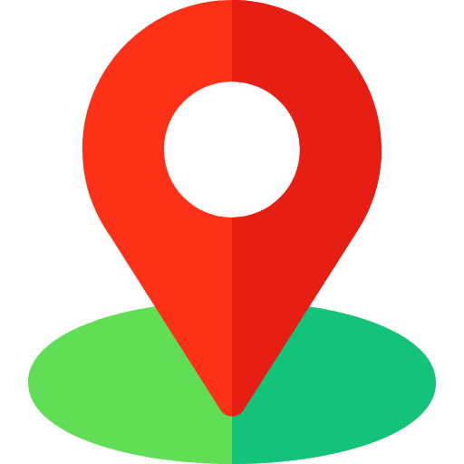

Mathilde DECROCK
Informations
Date de naissance:
14 avril 1985
Permis :
B
LOMME-LILLE
.png) 06 63 49 93 71
06 63 49 93 71mathilde.decrock@gmail.com
Langues
Niveau correct

Niveau Scolaire
Centres d'intérêts
Equitation
Musique
Jeux Vidéos